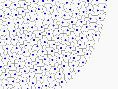

Placing Points: Fast Poisson Disk
Motivation
In videogames and computer graphics, we often get into situations where we want to distribute something throughout a region. Things like placing trees in a virtual forest or a raytracer casting out rays to determine pixel color. In cases like these, the most straightforward approaches have some big drawbacks! A regular grid looks artificial and produces undesirable aliasing effects and Moiré patterns. Metaphorically throwing darts at the region using uniform random numbers will produce some regions with dense clusters and others with large gaps.
What we need is a balance between the chaos of pure randomness and the unnatural order of regular spacing: the points should look evenly spaced when viewed at large scales, but not predictable at small scales. Distributions meeting those criteria are sometimes called "blue noise."


Colors of Noise
The term "blue noise" comes from signal processing and from electronics and audio-related fields. The name is an analogy with visible light: a convenient way to characterize noisy signals according to how much of the signal's power is at different frequencies. In audio, we experience this as pitch and timbre; in light, we perceive it as color.
White noise is probably the most familiar "color of noise". It is so named because, like white light, it has an even balance of frequencies. If instead more low-frequency light enters our eye, we perceive a redder color. When the higher frequencies dominate, we perceive it as bluer.


It might seem odd to think of frequencies and power spectra when we are trying to plant some virtual trees, but it gives us a way to formally define the behavior we're looking for and measure how well we achieve it. Within our generated forest, we want a relatively even density of trees, with no large areas of the forest looking much different compared to another large area. That means we want lower power at low frequencies. And at the same time, we want to prevent trees from occurring too close together. That tells us that we want higher power at higher frequencies. Blue noise!
Possible Approaches
For those familiar with the concept, this discussion of frequencies might suggest using a discrete Fourier transform! We could take our desired frequency-domain behavior, generate random values in the frequency domain based on that shape, and then use the inverse Fourier transform to construct the sample data that would generate it. That is how I created the graphs above! This works well for the one-dimensional case in the figures above, but I haven't yet figured out how to extend that approach to more dimensions. It would also mean diving into more mathematics than I'd prefer to for this particular article, so we'll look at some other methods.
The approach I am going to go into most detail about here and the one I would most often recommend is referred to as Fast Poisson Disk Sampling, from the title of a SIGGRAPH paper by Robert Bridson. I'll mention a few others first, though, because they are interesting in their own right.
Jittered Grid
In a way, a regular grid is actually pretty close to what we want. The points are very evenly spaced; this problem is that they are too evenly spaced. What if we took the points on that grid and randomly pushed them around a bit? With a large jitter, we increase clustering. With a small jitter, we keep the regularity and anisotropy of the original grid. One must come at the expense of the other with this approach. It is very fast, though, and may be close enough for many use cases!


Dart Throwing
We can just "throw darts" at the region and use those points. By which I mean that for each coordinate of a point, we just take a uniform random variable scaled to match the size of the region. This generates a white noise distribution with the clumping and gapping problems as seen at the top of this article. But if we reject darts that get within some radius of other darts, the revised process gives us much better results, at the cost of needing to throw very many more darts, depending on how dense the packing we need is relative to the radius.

Mitchell's Best Candidate
The Mitchell's Best Candidate approach is a variation of dart throwing. Instead of throwing darts one at a time and rejecting them, we throw in batches and keep only the best dart of each batch. "Best" in this case means the one that is farthest from all previously accepted points. This can become quite slow as the number of accepted points grows, but it does produce good results.

More Exotic Approaches
People have come up with many ways to do this with various advantages and disadvantages. Tile-based methods make a library of smaller distributions of blue noise then combine them to fill larger regions. An aperiodic tiling such as Penrose tilings can be used as the basis for the points. Points generated by other methods can be relaxed to produce a smoother distribution. I'm sure there are more that I didn't think of!


Fast Poisson Disk Sampling
The fast Poisson disk method from Bridson's paper seems to have become the most common approach. It uses a couple of clever tricks to operate in linear time (in the number of points generated) and still produce high-quality results.
At a high level, the process starts from one arbitrary seed point in the region. Future points are then generated by testing candidate points chosen from an annulus around previously accepted points. It continues until the region gets too crowded to find more.
There are two tricks to make this process fast. The region is divided into a grid that allows the distance testing to consider only very few points. It also tracks a list of "active" points that can still serve as the basis for future candidates, removing points from the list as the space around them fills.
Bridson's algorithm works in any number of dimensions, but for simplicity I present it here in only two.
Inputs to the Algorithm
Our fast Poisson disk function takes the following inputs:
width,height- The size of the region.
min_dist- The minimum allowed distance between points.
max_points- An upper limit on the number of generated points.
max_tries- A maximum number of consecutive candidate rejections before a point is removed from the active list. 30 is a common value for this parameter.
TODO
- ToC and heading anchors
- Clearly state the problem at the start
- Is the DFT tangent helpful at all?
- The words forest and tree are in there too much
- work in keywords like "procedural generation" "stochastic process" and idk what else
- add a bio
- make explicit that it is a simplified explanation for educational purposes
- link to papers and other articles related to it